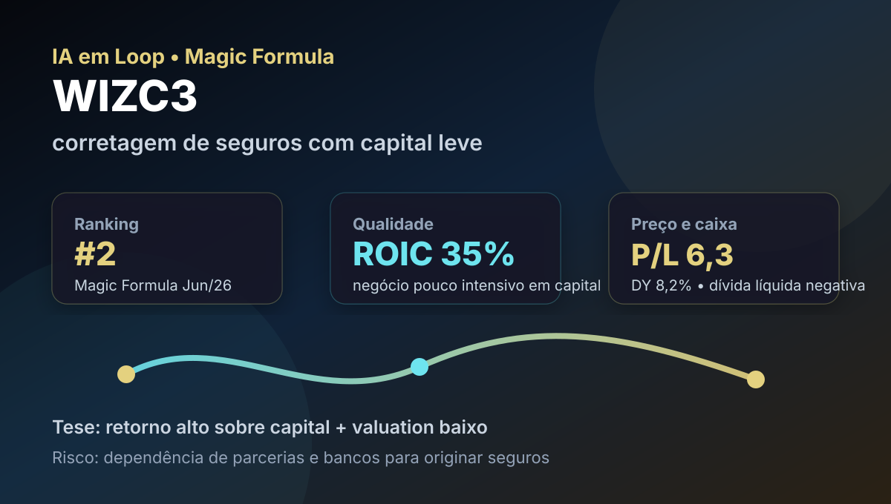

26/06: WIZC3, seguros e o teste do capital leve
Depois de energia regulada e mineração, a leitura editorial volta para uma empresa de capital leve: WIZC3 aparece na 2ª posição do ranking Magic Formula de junho/2026, tem retorno alto sobre capital e está na carteira real Magic Formula. A pergunta é simples: o mercado está barato demais ou descontando dependência excessiva de parcerias?

WIZC3 é o tipo de empresa que a Magic Formula costuma destacar: pouca necessidade de capital físico, retorno alto sobre capital, valuation baixo e capacidade de distribuir caixa. O teste é saber se a recorrência das parcerias compensa o risco de concentração.
Resposta curta: barato e rentável, mas não é “seguro” só por vender seguros
WIZC3 combina três sinais fortes: ROIC de 34,9%, P/L de 6,30 e Dividend Yield de 8,2%, segundo consulta ao Fundamentus em 26/06/2026. O ranking Magic Formula coloca a companhia em 2º lugar porque a empresa parece entregar qualidade operacional com preço baixo. Além disso, a carteira real Magic Formula do IA em Loop tem posição em WIZC3: 13 unidades a preço médio de R$ 8,31, representando cerca de 8,6% da carteira.
Mas a tese não deve ser lida como renda previsível automática. Corretagem de seguros é um negócio leve em capital, porém depende de canais, convênios, bancos, seguradoras e força comercial. Se uma parceria relevante perde tração, a margem pode cair rápido. O mercado pode estar cobrando barato por enxergar exatamente essa fragilidade.
O que é capital leve? É um negócio que não precisa reinvestir grandes volumes em fábricas, máquinas ou estoques para crescer. Em tese, isso permite alto retorno sobre capital e mais caixa livre para dividendos. Na prática, capital leve também pode significar dependência de ativos intangíveis: marca, tecnologia, canal comercial e contratos de distribuição.
Por que WIZC3 entrou no radar hoje?
WIZC3 está no Top 20 da Magic Formula, aparece na carteira real e permite discutir um negócio de capital leve no segmento de seguros/corretagem. A pergunta principal é se a rentabilidade elevada compensa os riscos de execução, dependência de parceiros e ciclicidade comercial.
O dado público mais importante é a divergência entre rentabilidade e preço. A empresa tem margem bruta de 61,2%, margem EBIT de 50,0%, margem líquida de 26,5%, ROE de 28,3% e dívida líquida ligeiramente negativa, com dívida bruta de R$ 365,1 milhões contra patrimônio líquido de R$ 687,4 milhões. Isso parece saudável. O ponto fraco é que o lucro do 1T26 teve queda em algumas leituras públicas, enquanto o lucro ajustado reportado seguiu relevante — sinal de que o investidor precisa separar ruído contábil, ajustes e qualidade recorrente.
O que a Magic Formula está capturando
A Magic Formula procura empresas que combinem qualidade e preço. Em WIZC3, a qualidade aparece no retorno sobre capital e nas margens. O preço aparece no P/L baixo e no earnings yield elevado do ranking. Quando esses dois fatores aparecem juntos, o método sinaliza: “vale olhar com calma”.
A leitura do IA em Loop é que WIZC3 não é uma blue chip defensiva; é uma empresa de nicho, com bom retorno, mas com risco de execução. O negócio pode gerar caixa porque vende seguros e produtos financeiros usando canais de distribuição já existentes. Isso reduz capital empregado. Porém, se o canal perde volume, se um parceiro renegocia comissão, ou se o ciclo de crédito/seguros esfria, a vantagem operacional pode encolher.
| Sinal | Leitura prática | O que monitorar |
|---|---|---|
| ROIC 34,9% | Retorno alto para cada real empregado | Se permanece acima de 25% sem depender de evento não recorrente |
| P/L 6,30 | Preço aparentemente baixo para o lucro atual | Se o lucro de 2026 confirma a base usada pelo mercado |
| DY 8,2% | Distribuição de caixa relevante | Se dividendos seguem sustentáveis sem sacrificar crescimento |
| Dívida líquida negativa | Balanço com folga financeira | Se aquisições ou expansão não voltam a elevar alavancagem |
| Dependência de canais | Principal risco qualitativo | Renovação de contratos, volume vendido e comissões por parceiro |
A pergunta que decide a tese: parceria é ativo ou fragilidade?
Em uma seguradora tradicional, a marca, a carteira de clientes e o balanço de subscrição costumam pesar muito. Em uma corretora/plataforma de distribuição como a Wiz, o ativo central é a capacidade de originar vendas por meio de canais parceiros. Isso pode ser excelente quando os contratos são longos, os incentivos estão alinhados e o custo de aquisição de cliente é baixo. Também pode ser frágil se a empresa depende demais de poucos canais.
Portanto, a resposta de hoje é: as parcerias são um ativo se continuarem gerando volume com margem e baixa necessidade de capital; viram fragilidade se o crescimento exigir novas concessões comerciais, redução de comissão ou aquisição cara de distribuição. É por isso que o desconto não deve ser comprado cegamente.
O lado bom
Ranking Magic Formula #2, ROIC alto, P/L baixo, margens elevadas, dividendos relevantes, dívida líquida negativa e presença na carteira real Magic Formula. É uma tese de caixa e eficiência, não de crescimento explosivo.
O lado perigoso
Dependência de parcerias, possível volatilidade de lucro trimestral, sensibilidade a renegociação de canais e risco de o mercado estar precificando queda futura de margem em vez de uma barganha óbvia.
Estudo, entrada gradual ou espera?
Para carteira nova: WIZC3 merece estudo por valuation e qualidade, mas não deve ser tratada como ativo “seguro” apenas por estar ligada a seguros. A posição ideal, se existir, precisa respeitar o risco de concentração em canais e a baixa previsibilidade de múltiplos pequenos.
Para quem já tem: a carteira real Magic Formula do IA em Loop já carrega WIZC3. A pergunta não é “comprar porque caiu” ou “vender porque está abaixo do preço médio”; é verificar se o lucro recorrente, a geração de caixa e os contratos continuam sustentando o retorno sobre capital. Se o ROIC continuar alto e a dívida líquida permanecer baixa, a tese melhora. Se margem ou volume caírem por perda de canal relevante, a tese piora.
Gatilhos positivos: lucro ajustado crescendo por mais de um trimestre, manutenção de ROIC acima de 25%, dividendos sem aumento de dívida, renovação de parcerias importantes e queda do custo financeiro. Gatilhos negativos: queda persistente de margem, perda ou renegociação desfavorável de canal relevante, aquisição cara para comprar crescimento, ou dividendos maiores do que o caixa recorrente permite.
Leitura IA em Loop
WIZC3 é uma boa ilustração do que a Magic Formula tenta encontrar: empresa eficiente, barata e com capacidade de devolver caixa. O ponto é que “barato” não elimina risco; apenas muda a exigência de prova. A tese fica interessante se a Wiz continuar mostrando que seus canais de distribuição são ativos duráveis, não contratos frágeis. Até lá, a leitura correta é disciplinada: qualidade numérica alta, preço baixo e risco qualitativo concentrado em parcerias.